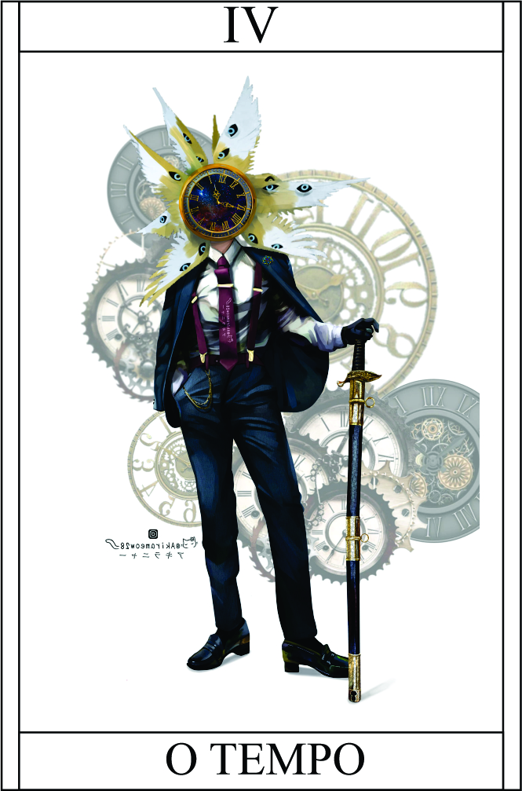

O Tempo
Têndencia: Neutro Mal
Passiva:
Visão Premonitória:
você possui a capacidade de ver premonições e flashes do passado de forma aleatória. Essa habilidade especial permite que você tenha vislumbres do que está por vir e revele fragmentos do passado.
Essas visões premonitórias podem ser uma vantagem estratégica, permitindo que você antecipe eventos futuros e tome decisões com base nessas informações. Além disso,
ao ter acesso a fragmentos do passado, você pode descobrir segredos ocultos, obter conhecimento valioso e desvendar mistérios. No entanto, é importante ressaltar que essas visões são aleatórias e não podem ser controladas. Elas ocorrem espontaneamente e você não tem controle sobre quando ou como elas acontecem.
Isso pode adicionar um elemento de imprevisibilidade à sua jornada e exigir habilidade em interpretar e utilizar as informações recebidas
Legado 1 - Retrocesso Temporal
Você possui a capacidade de voltar no tempo durante um combate. No entanto, existem algumas condições e limitações para o uso dessa habilidade. Você pode realizar retrocessos temporais até três vezes, o que permite que você desfaça ações e decisões tomadas nos últimos seis segundos.
Essa habilidade pode ser uma vantagem estratégica, permitindo que você corrija erros, evite danos ou refaça uma jogada mal sucedida.
É importante ressaltar que essa habilidade só pode ser utilizada durante um combate, quando você estiver ativamente envolvido na ação. Além disso, o retrocesso temporal está limitado a um período de seis segundos, o que significa que você só pode voltar até esse ponto específico no tempo.
Volta somente 6 segundos
Condição para ativar a habilidade:
É necessário que cai 3 para cima no dado.
Legado 2 - O Mundo!
Ao ativar essa habilidade, você emite uma onda temporal que causa uma interrupção no fluxo do tempo ao seu redor. Isso resulta na paralisia temporária de todos os seres vivos próximos a você, incluindo seus oponentes.
Durante esse período de paralisia, você é capaz de se mover livremente e executar ações sem restrições, enquanto seus oponentes permanecem imóveis e incapazes de reagir. Essa habilidade pode ser usada como uma oportunidade para atacar ou escapar de situações perigosas.
+1 passo
Condição para ativar a habilidade:
É necessário que você esteja em uma situação de perigo iminente, onde sua vida esteja em risco. Não poderá efetuar ataques fatais
Legado 3 - Distorção Temporal:
Ao ativar essa habilidade, você cria uma distorção no tempo ao seu redor, causando uma aceleração ou desaceleração do mesmo. Isso afeta a velocidade de todos os objetos e seres vivos em um determinado raio.
Você pode usar essa habilidade de várias maneiras estratégicas, como desacelerar o tempo para evitar ataques inimigos, acelerar o tempo para aumentar sua velocidade de movimento ou até mesmo criar uma zona de tempo estática onde apenas você pode se mover livremente.
No entanto, essa habilidade exige um grande domínio sobre o controle temporal e um uso cuidadoso, pois distorções temporais excessivas podem ter efeitos colaterais indesejados no tecido da realidade.
Caminhar Livre pelo Grind | Reduzir velocidade inimigo -2 ou Acelerar sua velocidade +2 | Duração: 4 Round | Entra em recarga para proxima batalha
Restrição de uso:
É necessário que você esteja em um estado de controle total sobre suas habilidades temporais e tenha uma compreensão profunda do fluxo temporal.
Legado 4 - Retorno Temporal:
o ativar essa habilidade, você é capaz de lançar um objeto em direção a um alvo específico. O objeto escolhido pode ser ofensivo ou não, dependendo da sua intenção. No entanto, o elemento único dessa habilidade é o retorno temporal do objeto lançado.
Quando o objeto atinge o seu alvo ou conclui seu trajeto, ele é imbuído com uma energia temporal que o faz retroceder no tempo, retornando ao ponto de origem em alta velocidade. Durante esse retorno, o objeto destrói tudo o que estiver em seu caminho, causando danos devastadores aos obstáculos e inimigos que encontrar.
Essa habilidade é versátil, pois permite que você lance objetos ofensivos, como projéteis explosivos, ou objetos não ofensivos, como dispositivos de suporte ou cura. Independentemente da natureza do objeto, o retorno temporal garante que ele destrua qualquer obstáculo no caminho de volta, abrindo caminho para o seu objetivo.
No entanto, é importante lembrar que o uso dessa habilidade requer precisão e timing adequados, pois você precisa calcular corretamente o ponto em que o objeto atingirá o alvo e a força necessária para que ele retorne ao ponto de origem. Um erro de cálculo pode resultar em um retorno prematuro ou em uma trajetória incorreta do objeto.
O Retorno Temporal é uma habilidade que combina a manipulação do tempo com o lançamento estratégico de objetos, oferecendo uma opção única para causar danos significativos aos seus oponentes ou fornecer suporte tático à sua equipe.
Dano do retorno: 10HP
Restrição de uso:
É necessário que você tenha uma compreensão avançada do fluxo temporal e da manipulação do tempo.